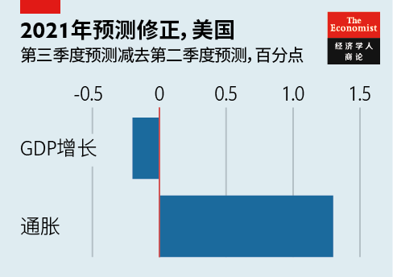
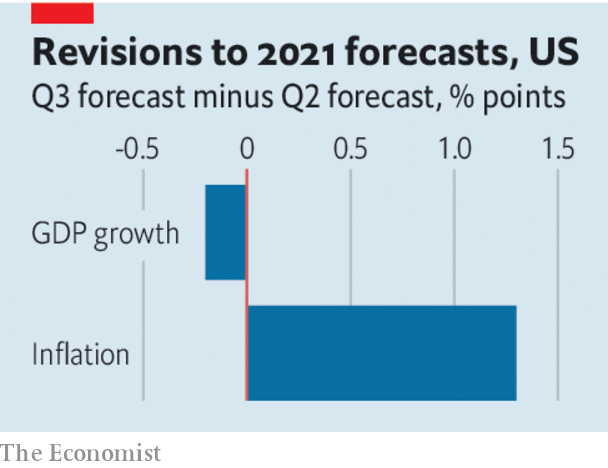

2021-09-11T14:22:01+00:00
【首文】德尔塔与世界经济
疫情如何引发滞胀
随着新冠病毒不断变异，疫情对经济的影响也已发生变化
对世界经济来说，这是一个惊扰频传的夏天。美国、欧洲和中国的经济增长都慢于投资者的预期。消费价格急速上升，令人不安，尤其是在美国。即使在通胀一贯温和的欧元区，8月的价格也比一年前高出3%，升幅为十年来最高。零部件和劳动力供应短缺，航运缓慢且昂贵，加上各种令人晕头转向的封锁措施，各国经济备受干扰。
这要归咎于德尔塔变种的传播，但疫情影响经济的方式正在转变。之前一波又一波疫情导致经济活动戛然而止，世界各地对于疫情打击经济增长已经习以为常，价格走势平稳甚至下降。相比之下，当前的德尔塔变种更像是一股滞胀力量——不会那么剧烈地影响增长，却会刺激通胀。
德尔塔变种对富裕世界消费支出形成压力，但没有致其崩溃。在疫苗供应充足的国家，新增感染病例不会像之前那样阻碍消费者外出活动。欧洲就在德尔塔变种流行期间重启了服务业。
消费者似乎不再那么惧怕新冠肺炎，即便医院里满是未接种疫苗的感染者。一年前，美国餐馆的食客数量是2019年同期的将近一半。而现在，尽管感染入院人数是之前的三倍，服务业客流也只下降了约10%。在日本，东京等地进入紧急状态也似乎没阻碍消费者踏足商铺。只有在实施严厉政策力求“清零”的国家，人们才会困居家中。澳大利亚和新西兰因为封锁措施面临新一轮衰退，而中国的服务业也显出萎缩之势。
与此同时，消费者（尤其是美国人）对汽车、电子设备和运动用品的需求增长前所未见，但德尔塔变种肆虐，持续干扰全球商品供应。疫苗接种率低的东南亚国家疫情爆发，导致工厂和物流网络暂时关闭，延长了供应链中断的时间。盖璞（Gap）和耐克等美国零售商已游说白宫向越南捐赠更多疫苗，因为越南的工厂对这些零售商的业务已变得至关重要。商品短缺正不断推高价格。
新冠病毒与经济的关系变化将影响到政策制定。政策制定者将无法再祭出疫情早期的招数：通过限制人员流动来遏制病毒传播，同时推出刺激措施来创造出补偿性的商品需求增长。
重振服务业是目前实现快速增长的唯一捷径，因为这里是闲置产能所在。按实值计算，今年第二季度美国家庭的服务支出比2019年约低3%。假如德尔塔变种的传播影响到休闲及酒店餐饮等服务行业，政府推出更多刺激措施只会进一步推高通胀。
而且也很难再说人们不愿消费是因为害怕感染病毒，以及说政府为遏制疫情采取的限制措施因而不会带来额外的经济成本。感染病例与人员流动的关联减弱，加上必须要重振服务业，令封锁措施的成本上升。如果医院承受的压力加大，导致英国这类高接种率国家也在冬季限制服务业，那么这些措施的收效会变小，而经济损失会很大。德尔塔变种引发的这波疫情可能很快将消退，让世界经济所受的压力得以缓解。如果德尔塔继续肆虐或是另一个变种传播开来，为遏制病毒所付出的代价就更难证明其必要性了。
2021-09-11T14:22:01+00:00
Delta and the world economy
How the pandemic became stagflationary
As the virus has changed, so has its relationship to the economy
IT HAS BEEN a summer of unpleasant surprises for the world economy. America, Europe and China are growing more slowly than investors had hoped. Consumer prices are rising uncomfortably fast, especially in America. Even in the euro area, used to tepid inflation, prices in August were 3% higher than a year earlier, the most in a decade. Economies are troubled by shortages of parts and labour, slow and expensive shipping and the bewildering variation of lockdown measures.
The spread of the Delta variant is to blame, but the way the pandemic is affecting the economy is shifting. The world had become accustomed to the virus battering growth, as waves of infection caused a sudden stop in activity, and prices moderated or even fell. Delta, by contrast, looks like a stagflationary force that is sapping growth less dramatically but firing up inflation.
Delta is weighing on consumer spending in the rich world but not causing a collapse. In countries with lots of vaccine, cases are no longer doing as much to stop consumers from moving around. Europe’s service sector has reopened amid its Delta wave.
Consumers seem less scared of the disease even if there are enough unvaccinated people to fill up hospitals. A year ago the number of diners in American restaurants was nearly half the level in 2019. Now service is about 10% down, even though hospitals are three times fuller. In Japan a state of emergency covering Tokyo does not seem to be keeping consumers away from the shops. Only in countries with draconian policies aimed at eliminating the virus are people stuck at home. Australia and New Zealand face new recessions as a result of their lockdowns and China’s service sector appears to be shrinking.
Meanwhile, the spread of Delta continues to interfere with the global supply of goods just as consumers, especially Americans, are intent on buying more cars, devices and sporting gear than ever. Outbreaks in South-East Asian countries with low rates of vaccination are causing production plants and logistics networks to shut down temporarily, prolonging the disruption to supply chains. In America retailers, including Gap and Nike, have lobbied the White House to donate more vaccines to Vietnam, so crucial have its factories become to their businesses. Shortages are driving up prices.
The changing relationship between the virus and the economy has implications for policymakers. They will not be able to repeat the trick from earlier in the pandemic of restricting people’s movement as a way to contain the spread of the virus, while at the same time unleashing stimulus to create a compensating boom in demand for goods.
A service-sector revival is now the only quick route to fast growth because that is where the slack is. In the second quarter of the year spending on services by American households was about 3% below its level in 2019 in real terms. Should the spread of Delta interfere with service industries such as leisure and hospitality, more stimulus will only create more inflation.
It is also harder to argue that fear of the virus scares consumers off spending, and that government restrictions to slow the spread of disease therefore have little extra economic cost. A weaker link between cases and people’s movement, and the necessity of service-sector growth, raise the cost of lockdowns. If pressure on hospitals causes even highly vaccinated countries like Britain to restrict services over the winter, the economic damage will be large and the benefits smaller. The Delta wave may subside soon, easing the pressure on the world economy. If it does not or another variant takes its place, the trade-offs involved in fighting the virus will become harder to justify. ■
2021-09-11T14:22:01+00:00
【首文】德爾塔與世界經濟
疫情如何引發滯脹
隨着新冠病毒不斷變異，疫情對經濟的影響也已發生變化
對世界經濟來說，這是一個驚擾頻傳的夏天。美國、歐洲和中國的經濟增長都慢於投資者的預期。消費價格急速上升，令人不安，尤其是在美國。即使在通脹一貫溫和的歐元區，8月的價格也比一年前高出3%，升幅為十年來最高。零部件和勞動力供應短缺，航運緩慢且昂貴，加上各種令人暈頭轉向的封鎖措施，各國經濟備受干擾。
這要歸咎於德爾塔變種的傳播，但疫情影響經濟的方式正在轉變。之前一波又一波疫情導致經濟活動戛然而止，世界各地對於疫情打擊經濟增長已經習以為常，價格走勢平穩甚至下降。相比之下，當前的德爾塔變種更像是一股滯脹力量——不會那麼劇烈地影響增長，卻會刺激通脹。
德爾塔變種對富裕世界消費支出形成壓力，但沒有致其崩潰。在疫苗供應充足的國家，新增感染病例不會像之前那樣阻礙消費者外出活動。歐洲就在德爾塔變種流行期間重啟了服務業。
消費者似乎不再那麼懼怕新冠肺炎，即便醫院裡滿是未接種疫苗的感染者。一年前，美國餐館的食客數量是2019年同期的將近一半。而現在，儘管感染入院人數是之前的三倍，服務業客流也只下降了約10%。在日本，東京等地進入緊急狀態也似乎沒阻礙消費者踏足商鋪。只有在實施嚴厲政策力求“清零”的國家，人們才會困居家中。澳大利亞和新西蘭因為封鎖措施面臨新一輪衰退，而中國的服務業也顯出萎縮之勢。
與此同時，消費者（尤其是美國人）對汽車、電子設備和運動用品的需求增長前所未見，但德爾塔變種肆虐，持續干擾全球商品供應。疫苗接種率低的東南亞國家疫情爆發，導致工廠和物流網絡暫時關閉，延長了供應鏈中斷的時間。蓋璞（Gap）和耐克等美國零售商已遊說白宮向越南捐贈更多疫苗，因為越南的工廠對這些零售商的業務已變得至關重要。商品短缺正不斷推高價格。
新冠病毒與經濟的關係變化將影響到政策制定。政策制定者將無法再祭出疫情早期的招數：通過限制人員流動來遏制病毒傳播，同時推出刺激措施來創造出補償性的商品需求增長。
重振服務業是目前實現快速增長的唯一捷徑，因為這裡是閑置產能所在。按實值計算，今年第二季度美國家庭的服務支出比2019年約低3%。假如德爾塔變種的傳播影響到休閑及酒店餐飲等服務行業，政府推出更多刺激措施只會進一步推高通脹。
而且也很難再說人們不願消費是因為害怕感染病毒，以及說政府為遏制疫情採取的限制措施因而不會帶來額外的經濟成本。感染病例與人員流動的關聯減弱，加上必須要重振服務業，令封鎖措施的成本上升。如果醫院承受的壓力加大，導致英國這類高接種率國家也在冬季限制服務業，那麼這些措施的收效會變小，而經濟損失會很大。德爾塔變種引發的這波疫情可能很快將消退，讓世界經濟所受的壓力得以緩解。如果德爾塔繼續肆虐或是另一個變種傳播開來，為遏制病毒所付出的代價就更難證明其必要性了。